Форма
Палочковидная, шаровидная, изогнутая или спиралевидная форма клетки.
01Учебный исследовательский проект
Изучение морфологии под микроскопом
Исследуем форму, размеры, расположение и особенности движения микроорганизмов — от вытянутых бактериальных палочек до тонких гибких спиралей.
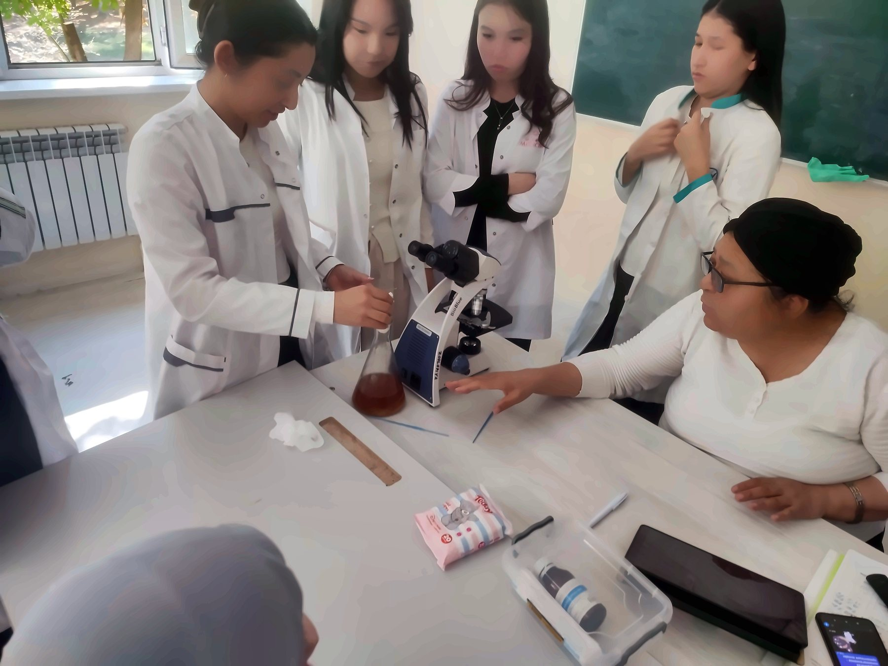
01 / Введение
Морфология бактерий — описание формы, размеров и внешних особенностей клеток. Она помогает систематизировать наблюдения, сравнивать препараты и выбирать дальнейшие методы исследования.
Палочковидная, шаровидная, изогнутая или спиралевидная форма клетки.
01Длина и ширина клетки, которые обычно выражают в микрометрах.
02Клетки могут быть одиночными, парными, цепочечными или собираться в группы.
03Направленное движение и характер изгибов можно оценивать подходящими методами.
04Важно: внешний вид зависит от возраста культуры, подготовки препарата, окраски и качества оптики. Одной формы обычно недостаточно, чтобы точно определить вид бактерии.
02 / Группа первая
Это бактерии с вытянутой клеткой, длина которой обычно больше ширины. Их называют палочками, но представители группы могут заметно различаться по размеру, очертаниям и свойствам.
Встречаются короткие, длинные, тонкие и слегка изогнутые клетки.
Поодиночке, попарно или цепочками после последовательных делений.
Некоторые палочковидные бактерии образуют эндоспоры — устойчивые структуры.
Одни представители способны двигаться, другие остаются неподвижными.
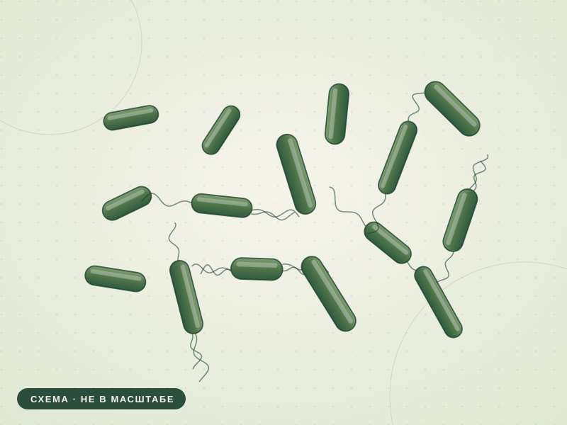
03 / Варианты формы
При описании препарата фиксируют именно видимые признаки, не делая вывод о виде только по очертаниям клетки.
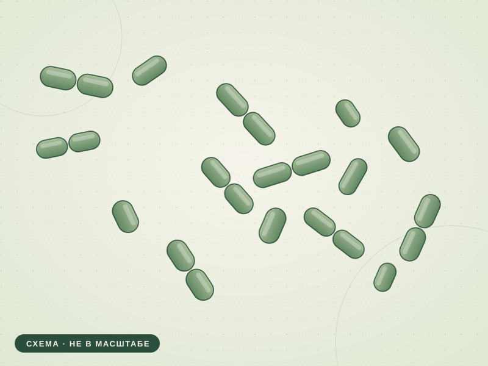
Могут по очертаниям напоминать овальные клетки; важно учитывать пропорции длины и ширины.
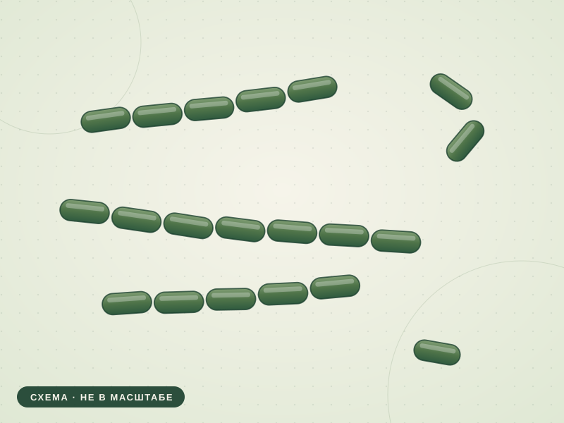
Клетки остаются соединёнными после деления, образуя заметные последовательности.
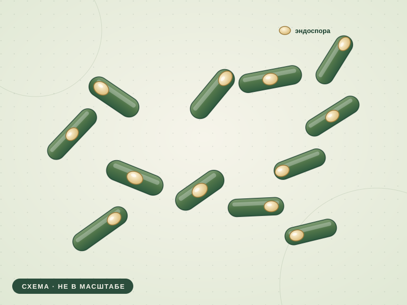
У некоторых бактерий можно выявить эндоспоры с помощью специальных методов окраски.
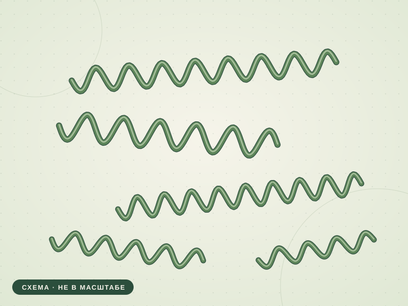
04 / Группа вторая
Спирохеты — тонкие, гибкие, спиралевидные бактерии. Их клетка может изгибаться и менять положение во время движения. Из-за малой толщины такие микроорганизмы бывает трудно рассмотреть обычной световой микроскопией.
Вытянутое тело имеет несколько изгибов или завитков.
Клетка способна совершать изгибательные и вращательные движения.
Движение связано с внутренними жгутиковыми структурами под наружной оболочкой.
Для наблюдения тонких клеток могут применяться специальные оптические режимы.
05 / Сравнение
Сравнивать бактерии лучше по нескольким характеристикам одновременно.
| Признак | Палочковидные бактерии | Спирохеты |
|---|---|---|
| Форма | Вытянутая, обычно прямая палочка | Тонкая гибкая спираль |
| Гибкость клетки | Чаще относительно жёсткая | Выраженная гибкость |
| Движение | Зависит от вида; возможно движение с помощью жгутиков | Характерные вращательные и изгибательные движения |
| Наблюдение | Часто доступны световой микроскопии после окраски | Тонкие клетки могут требовать тёмного поля или специальных методов |
| Что описывать | Длину, ширину, концы, цепочки, споры | Толщину, завитки, гибкость и движение |
Микроскопия помогает описать форму, но точное определение вида часто требует дополнительных лабораторных исследований.
06 / Практическое изучение
Для учебного наблюдения используют готовые фиксированные препараты или образцы, подготовленные преподавателем.
Проверить чистоту оптики и правильность размещения готового препарата.
Начать с малого увеличения, чтобы найти подходящую область препарата.
Перейти к нужному увеличению и аккуратно настроить резкость изображения.
Записать форму, размеры, расположение клеток и особенности окраски.
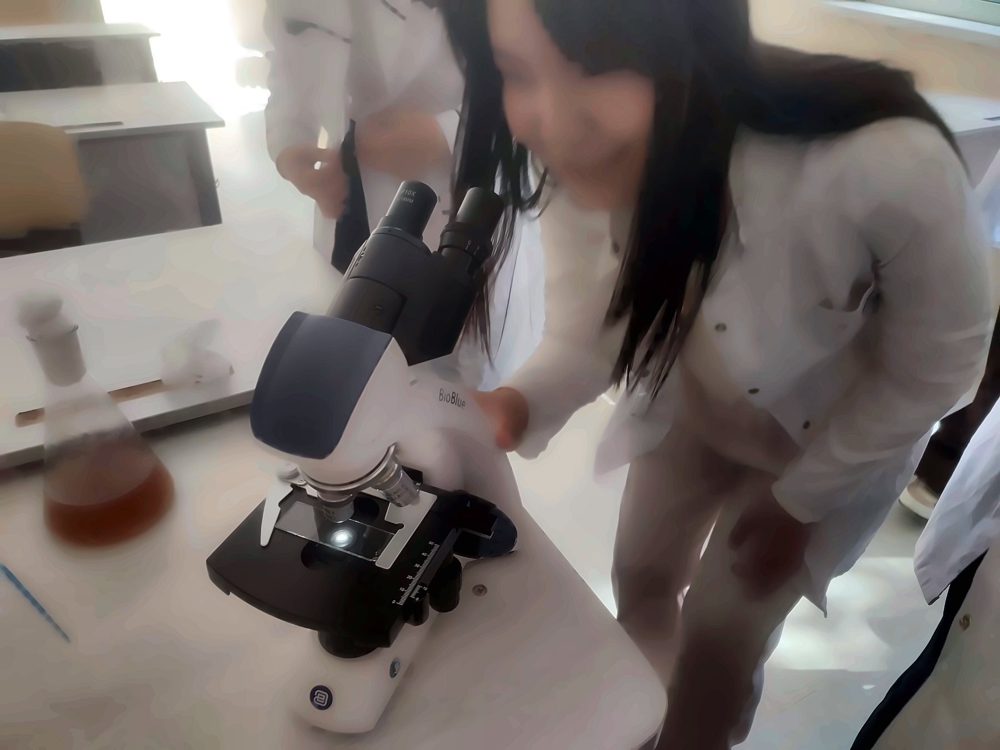
Запишите увеличение, метод окраски, форму клеток, их расположение и то, насколько чётко различимы контуры. Если используется микрофотография, по возможности укажите масштабную линейку и источник.
Перейти к фотогалерее ↗07 / Методы визуализации
Метод выбирают в зависимости от объекта, качества препарата и цели наблюдения.
Помогает разделять бактерии на грамположительные и грамотрицательные по свойствам клеточной оболочки.
Могут выявлять отдельные структуры, например эндоспоры, если они присутствуют.
Повышает контраст прозрачных клеток и может помочь наблюдать движение.
Позволяет видеть тонкие объекты на тёмном фоне; используется для некоторых спирохет.
Обеспечивает высокое разрешение и применяется для изучения тонкого строения клеток.
Один цвет или форма не являются достаточным основанием для определения вида бактерии.
08 / Практическая часть
В ходе изучения палочковидных бактерий и спирохет мы знакомимся с особенностями их морфологии, учимся наблюдать микроорганизмы под микроскопом и сравнивать их основные признаки.
Наша задача — изучить форму клеток, их расположение, особенности строения и видимые различия. Полученные наблюдения помогают лучше понять разнообразие бактерий и значение микроскопического исследования.
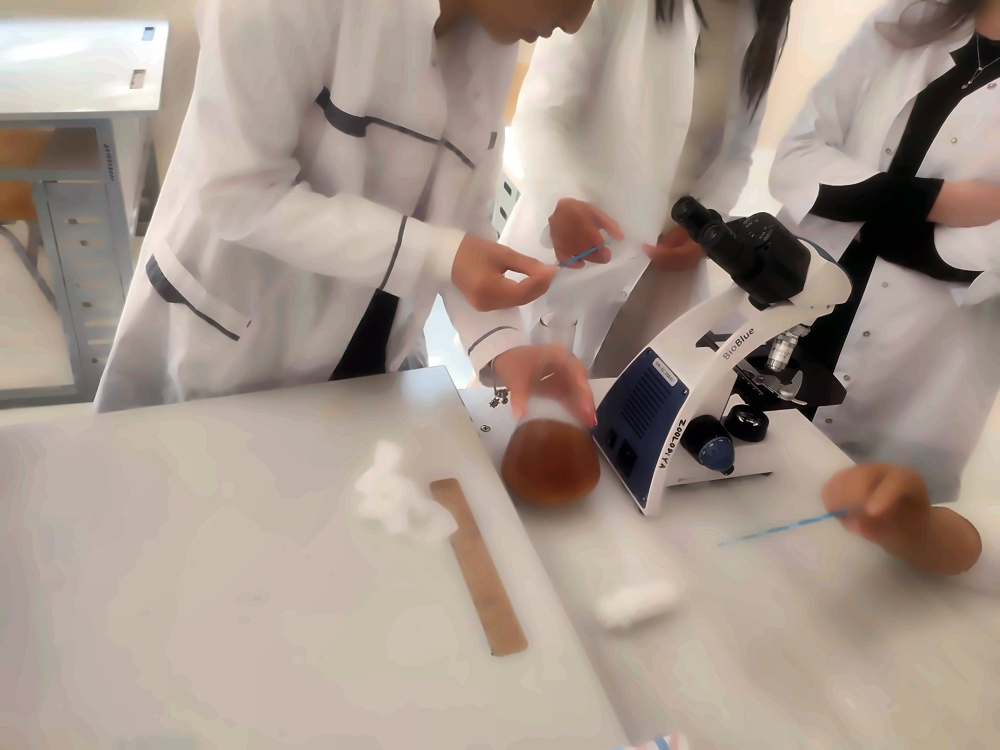
Перед началом работы мы знакомимся с устройством микроскопа, подготавливаем рабочее место и изучаем правила безопасного обращения с лабораторным оборудованием. Для наблюдения используются готовые учебные препараты.
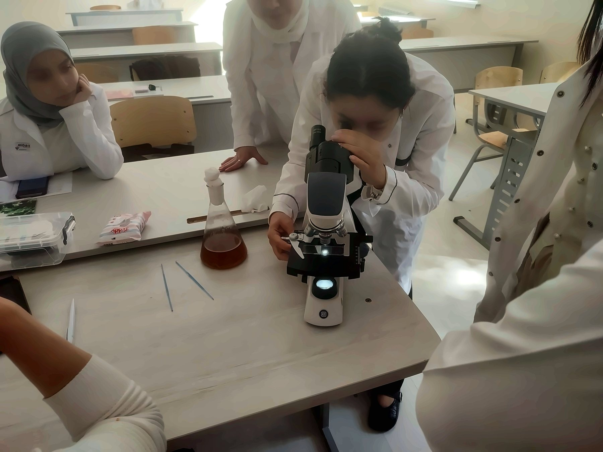
Во время наблюдения мы обращаем внимание на форму, контуры и расположение бактериальных клеток. Палочковидные бактерии имеют вытянутую форму, а спирохеты отличаются тонким спиралевидным телом. Видимость деталей зависит от препарата и метода микроскопии.
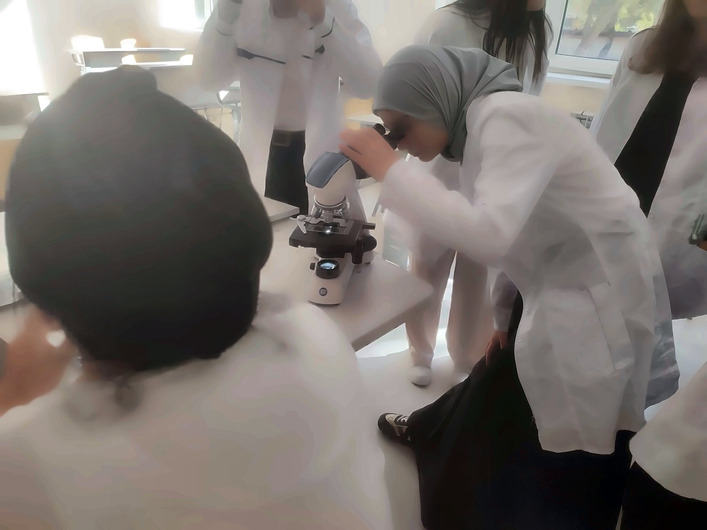
Палочковидные бактерии могут располагаться одиночно, парами или цепочками. Спирохеты имеют характерную извитую форму, которая связана с особенностями их движения. Сравнивая изображения, мы выделяем общие признаки и основные различия между группами.
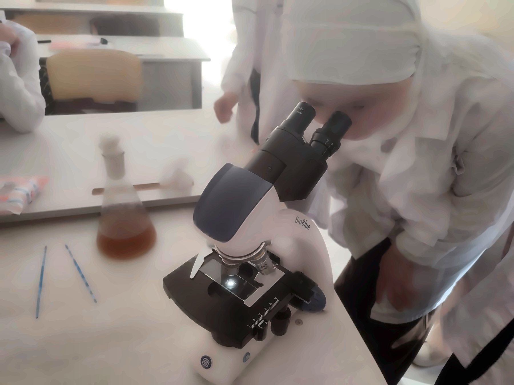
После наблюдения мы записываем результаты, описываем увиденные особенности и сопоставляем их с учебными материалами. Морфология позволяет предварительно охарактеризовать микроорганизмы, однако для точного определения вида необходимы дополнительные методы исследования.
Все снимки сделаны во время лабораторной работы с микроскопом.
09 / Фотоотчёт
Снимки из лаборатории: подготовка, работа с микроскопом и наблюдение препаратов. Нажмите на фото, чтобы открыть его крупнее.
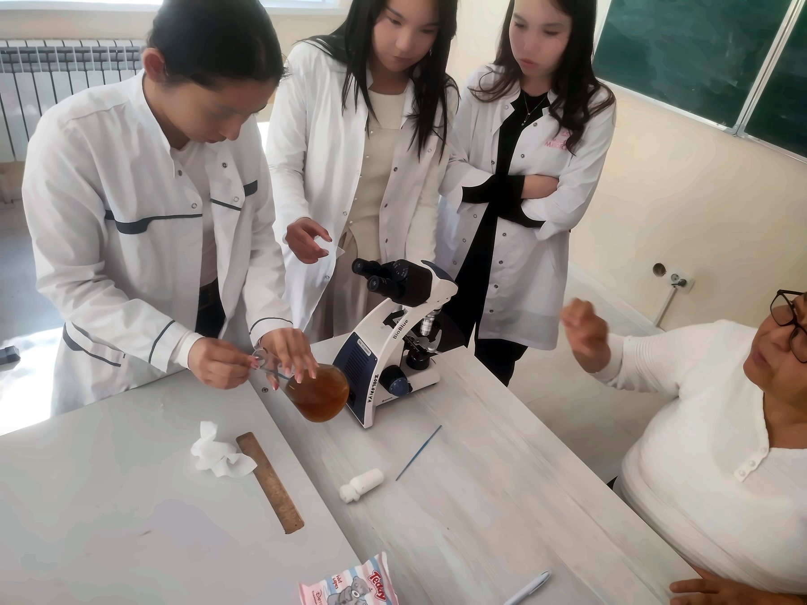
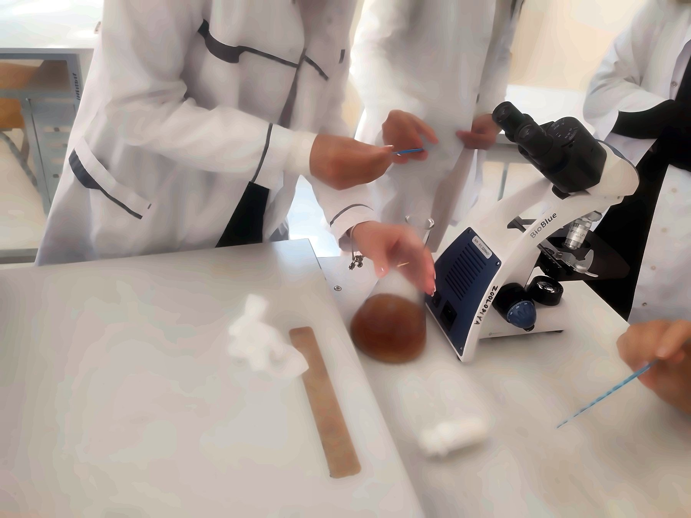
10 / Визуальный материал
Снимки поля зрения микроскопа, сделанные через окуляр. Нажмите на фото, чтобы рассмотреть его подробнее.
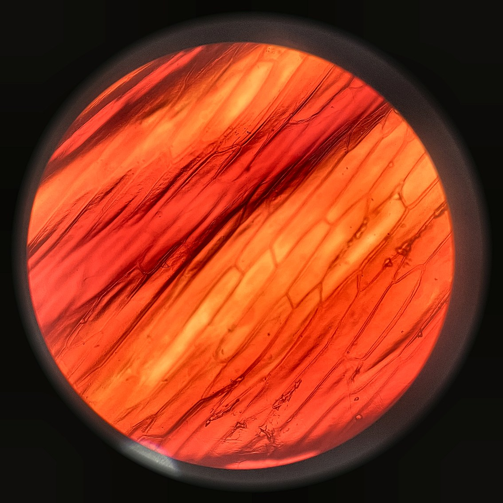
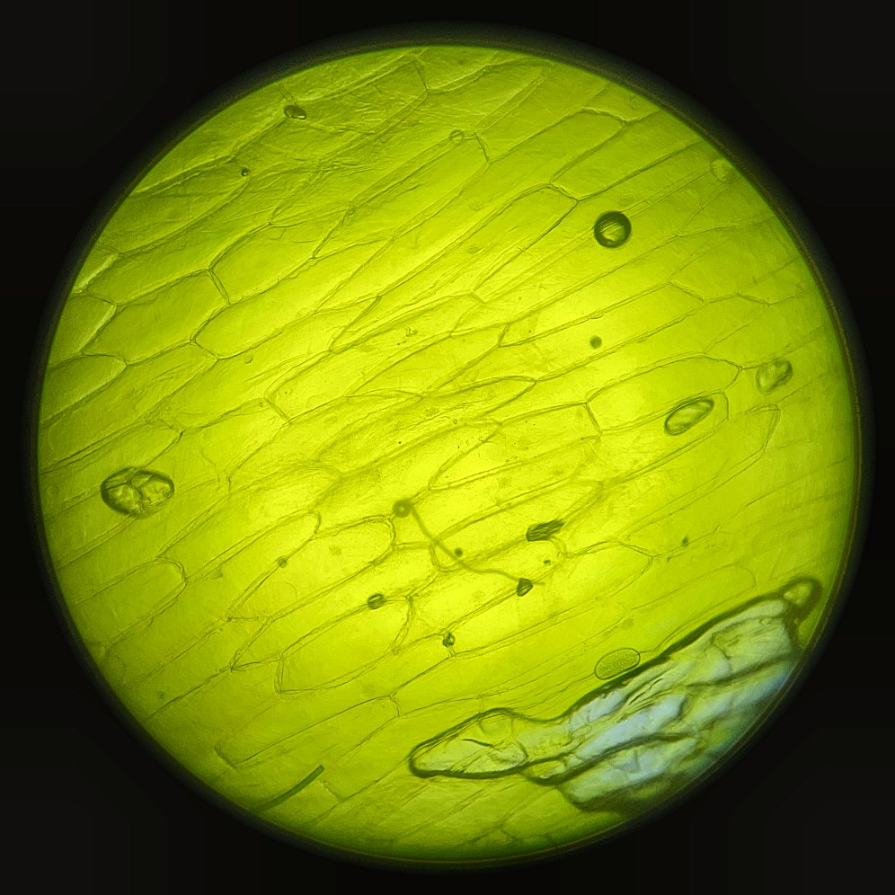
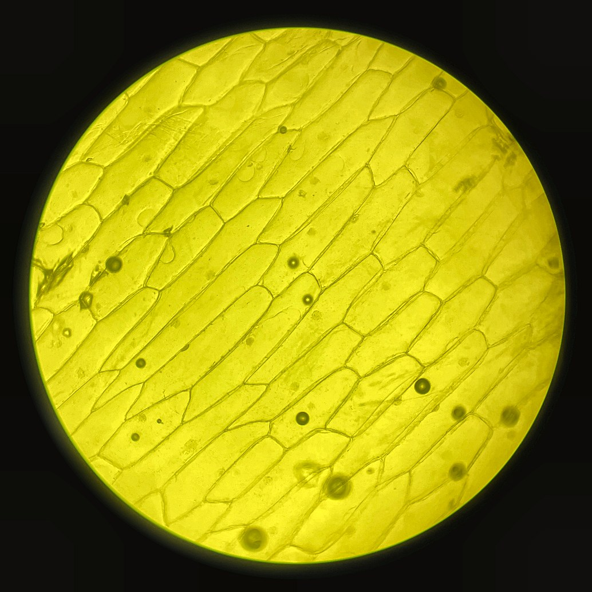
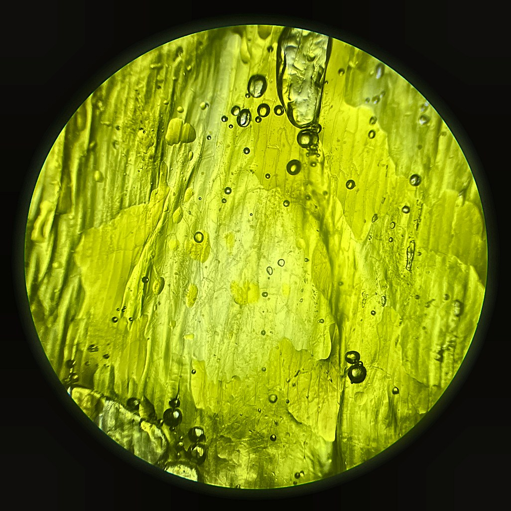
Обратите внимание: на этих микрофотографиях видны клетки растительной ткани. Изображения бактерий выше — схемы, нарисованные для наглядности; они не являются снимками.
11 / Карточка наблюдения
Сначала запишите то, что действительно видно на изображении, а уже затем формулируйте вывод. Это помогает отделять наблюдение от предположения.
12 / Безопасность
Не выращивайте неизвестные микроорганизмы и не открывайте ёмкости с неизвестными культурами. Для учебной работы используйте готовые препараты и материалы, предоставленные преподавателем. Соблюдайте правила лаборатории и мойте руки после занятия.
13 / Итоги исследования
Палочковидные бактерии имеют вытянутую форму и отличаются размерами, расположением и дополнительными структурами.
Спирохеты — тонкие гибкие спирали, характерная подвижность которых связана с особенностями строения.
Микроскопия, окраски и корректное описание помогают сравнивать образцы, однако точная идентификация часто требует дополнительных методов.